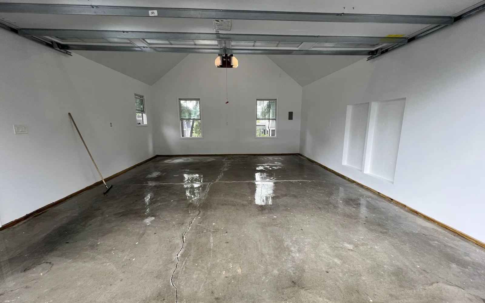
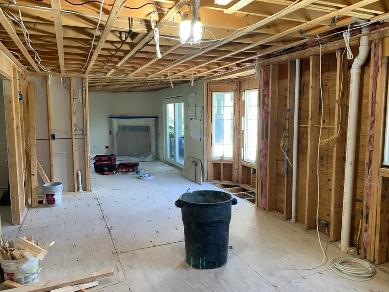
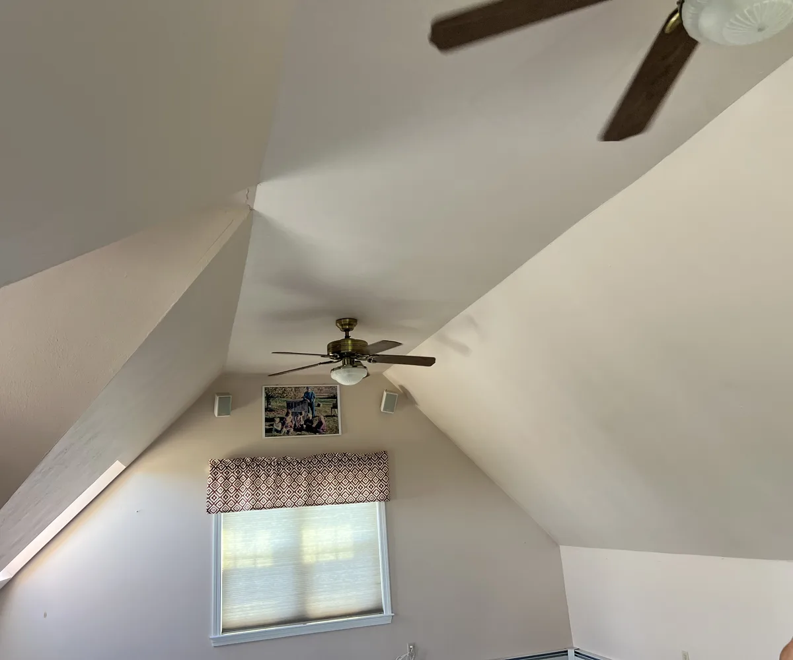
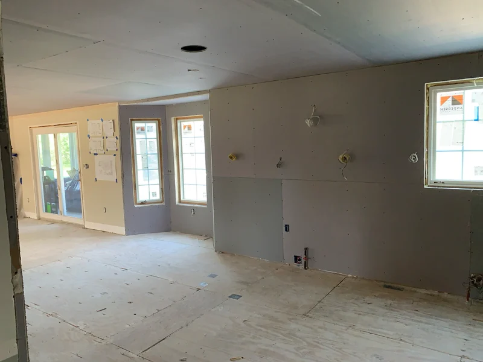
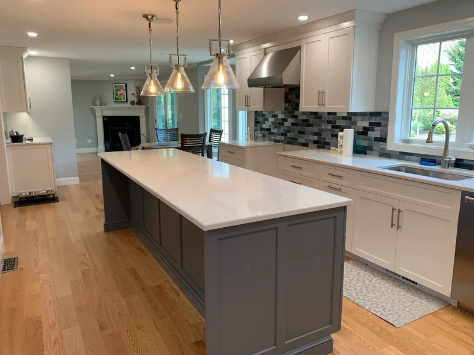

Insulation contractors in Massachusetts
Insulation contractors for warmer rooms, smooth drywall and lasting plaster
Insulation contractors at DeFaria Construction insulate attics, walls and basements, then hang, tape and repair drywall and plaster so every surface is ready for paint. Owner-led work across Essex and Middlesex County, Massachusetts.
Our work
From bare studs to an insulated, drywalled room
A real DeFaria conversion: open framing and rafters at the start, then insulation, drywall, mud and paint until the room is warm, quiet and finished.
Get a Free Estimate
The short answer
What do insulation contractors do in a remodel?

Insulation contractors slow the flow of heat through the walls, attic and floors so a home stays warmer in winter, cooler in summer and cheaper to run. In a remodel that work happens while the walls are open, and it only performs if the air leaks are sealed first and the drywall or plaster that covers it is done right.
- Air sealing at top plates, penetrations and rim joists.
- Attic insulation with proper ventilation baffles.
- Wall insulation in open walls during a remodel or addition.
- Rigid foam and framing for basement walls.
- Drywall hanging, taping and finishing to the right level.
- Drywall and plaster repair before paint.
DeFaria treats insulation, drywall and plaster as one sequence, so the wall you see is as good as the wall you do not.
Attics
Attic insulation in Massachusetts: how much is enough?

Attic insulation is usually the best return on any energy upgrade in a New England house, because heat rises and most older attics are under-insulated. The current energy code for our climate zone targets about R-60 in the attic floor, which is roughly 16 to 20 inches of blown-in insulation. Many North Shore homes we open have R-11 to R-19.
- Air seal first: top plates, light boxes, chimneys and the attic hatch leak more heat than thin insulation does.
- Keep soffit vents open with baffles so the roof deck stays dry and ice dams are less likely.
- Old vermiculite insulation may contain asbestos and should be tested, not disturbed.
- Knob and tube wiring has to be evaluated by an electrician before it is covered.
When we finish an attic room or knock down a ceiling during a remodel, we bring the insulation up to code at the same time, which is far cheaper than coming back later.
Walls
Wall insulation in older North Shore homes
Colonials, capes and Victorians across Essex and Middlesex County were often built with little or no wall insulation, and many use balloon framing with open cavities that run from the basement to the attic. That is why some old houses feel drafty no matter how high the thermostat goes.
- Open walls during a remodel: mineral wool or fiberglass batts, cut tight around wiring and boxes.
- Balloon-framed walls: fire blocking at each floor before insulation, as the code requires.
- Exterior walls of additions: insulation and air barrier built to the current energy code.
- Interior walls: mineral wool for sound control between bedrooms and bathrooms.
Closed walls in a house you are not remodeling can be dense-packed from outside or inside by a specialist insulation company. When the walls are open anyway, we insulate them as part of the job.
Basements
Basement and rim joist insulation

Basement walls and the rim joist, where the house sits on the foundation, are some of the leakiest spots in older homes. Fiberglass against cold concrete traps moisture, so we use rigid foam board against the foundation and seal the rim joist before framing.
Foam must be covered by a code-approved thermal barrier, usually half-inch drywall. This is part of every basement we build; see our basement finishing contractors page for the full process.
Mass Save
Mass Save rebates and the Home Energy Assessment
Massachusetts homeowners have an advantage: Mass Save, the state energy efficiency program run by the utilities, offers a no-cost Home Energy Assessment and incentives on approved insulation and air sealing through its participating contractors. For a home that only needs blown-in insulation in an attic or closed walls, that can be the most affordable route, and we will tell you so.
When insulation is part of a bigger project, such as finishing a basement or attic, building an addition or gutting a room, it makes sense to do it with the same team that frames and closes the walls. Book the assessment first, then bring the report to our walkthrough so the plan uses every incentive you qualify for.
Cost
How much do insulation, drywall and plaster work cost?
These are typical 2026 ranges for Essex and Middlesex County. Your number depends on access, the age of the house and what is behind the walls.
| Work | Typical 2026 range | What moves it |
|---|---|---|
| Attic air sealing and blown-in insulation | $1.50 to $3.50 per sq ft of attic | Old insulation removal, access, vermiculite |
| Insulation in open walls | $1.25 to $3 per sq ft of wall | Batts or mineral wool, fire blocking |
| Rigid foam on basement walls | $3 to $6 per sq ft of wall | Foam thickness, rim joist sealing |
| Drywall hang, tape and finish | $3 to $5 per sq ft of wall | Ceilings, finish level, corners |
| Small drywall repair | $250 to $600 | Size, texture match, paint touch-up |
| Plaster repair, per room | $500 to $2,000 | Loose plaster, lath, cracks |
DeFaria gives a fixed, itemized estimate after seeing the space, so the price follows the real scope instead of a guess.
Start to finish
From bare studs to a finished, plastered wall.
One DeFaria project in three stages (insulation, drywall and plaster), with the same wall taken all the way to a clean, paint-ready finish.


Drywall
Drywall installation and finish levels

Drywall is only as good as its finish. The industry uses levels from 0 to 5. Level 4 is the standard for most rooms: three coats of compound on joints and screws, sanded smooth, ready for flat or eggshell paint. Level 5 adds a skim coat over the whole surface and is worth it for walls hit by strong side light, dark paint or glossy finishes.
- Half-inch board on walls, five-eighths on ceilings and fire-rated areas.
- Moisture-resistant board in bathrooms and basements, cement board behind tile.
- Screws at the right spacing so nail pops do not show up a year later.
- Corner bead set straight so outside corners stay crisp.
- Primer before paint to even out the porosity of mud and paper.
We tell you which level each room gets in the estimate, so there are no surprises when the paint goes on.
Repairs
Drywall repair: cracks, holes, water stains and nail pops
Most drywall repair calls we get in winter come from the same few causes: settling cracks over doors and windows, nail pops as the house dries out with the heat on, holes from doorknobs and moving day, and stains from a roof or plumbing leak.
- Cracks are cut out, taped with mesh or paper and feathered wide so they do not come back.
- Nail pops are re-fastened with screws, then spotted and sanded.
- Holes get a backed patch, not just compound stuffed into the gap.
- Water stains are traced to the source first, then the board is replaced if it is soft, and sealed with stain-blocking primer.
- Texture and sheen are matched so the patch disappears after paint.
Small repairs are often bundled with painting or other work in the same visit, which keeps the cost down.
Plaster
Plaster repair and veneer plaster in older homes

Many homes in Lynn, Salem, Beverly and the older towns of the North Shore still have plaster on wood lath, often mixed with horsehair. Sound plaster is durable, quiet and part of the character of the house, so we repair it when we can instead of tearing it out.
- Cracked but attached plaster is re-secured with plaster washers and taped.
- Loose sections are removed and patched flush with the original surface.
- Badly damaged walls get new board or veneer plaster.
- Veneer plaster over blueboard, a long New England tradition, gives a harder, more durable surface than standard drywall.
We show you which walls can be saved and which should be replaced, and price both openly.
Safety
Lead paint and old walls
In homes built before 1978, painted plaster and trim may contain lead. Disturbing it by sanding, cutting or demolition is regulated, and lead-safe work practices are required by federal rules and by Massachusetts. That means containment, dust control and careful cleanup, especially in homes with children.
We plan lead-safe practices into the estimate on older homes, so the work protects your family and the price does not change halfway through.
Sound
Soundproofing walls and ceilings
A remodel is the easiest time to make a home quieter. Mineral wool in interior walls, five-eighths drywall, sealed gaps and resilient channel on ceilings cut noise between a basement and the living room, a bathroom and a bedroom, or a home office and the rest of the house.
- Mineral wool batts in interior walls and floor cavities.
- Five-eighths or sound-rated drywall on the noisy side.
- Acoustic sealant at the edges and around boxes.
- Resilient channel or clips on ceilings under busy rooms.
Timeline
How long does insulation and drywall work take?
- Walkthrough, inspection of the attic, walls or basement, and a fixed estimate.
- Air sealing and insulation, usually one to three days for a room or attic.
- Insulation inspection where the town requires it.
- Drywall hanging, one to two days for a typical room.
- Taping and three coats of compound with drying time, three to five days.
- Sanding, primer and paint, then a final walkthrough.
Repairs and single rooms often wrap in a few days. Whole floors and basements follow the larger project schedule, and you get updates at each step.
Honest advice
When to call us and when to call an insulation-only company
If the only job is blowing insulation into an attic or closed walls and you qualify for Mass Save, a participating insulation-only company is often the cheapest path. Call DeFaria when insulation is part of something bigger: a basement, an attic finish, an addition, a gut remodel, or walls that also need drywall, plaster repair and paint.
That is where one team saves you money and headaches, because the person who seals the walls is accountable for how the finished room looks and feels.
Reviews
What homeowners say about DeFaria Construction
DeFaria Construction has a 5.0 rating from 15 reviews on Google. See all reviews on Google.
My husband and I are so grateful for the beautiful work Luis did to get our home move-in ready. We had a newborn and a tight move-in window, and Luis went above and beyond to get everything done in time. He helped us with multiple projects including building a gate, repairing walls/doors…
I highly recommend Luiz as a contractor. When my spouse and I became first-time homebuyers, we hired him for a substantial remodel: painting walls throughout, refinished hardwood flooring and new tiles, new ceilings, and some carpentry. Luiz genuinely listened to our priorities when crafting the…
DeFaria Construction completed a full remodel of our master bathroom to our great satisfaction. Demolition down to the studs and subfloor was completed quickly. Plumbing changes and waterproof underlayment were quickly installed. Tiling of the floor and shower were beautifully done. Installation of…
FAQ
Insulation, drywall and plaster questions
How much does attic insulation cost in Massachusetts?
For a typical attic, air sealing plus blown-in insulation usually runs about $1.50 to $3.50 per square foot of attic floor, often $2,000 to $5,500 in total, before any Mass Save incentive. Old insulation removal, vermiculite or knob and tube wiring add cost. You get a fixed number at the walkthrough.
What type of contractor does insulation?
Insulation is done by insulation companies and by general and remodeling contractors. When the walls, attic or basement are already open for a remodel, the remodeling contractor usually installs it with the rest of the work. DeFaria insulates as part of basements, attics, additions and remodels, then hangs and finishes the drywall.
What time of year is insulation cheapest?
Pricing is driven more by scope than by season, but late spring and summer are often easier to schedule. In Massachusetts many homeowners act in the fall, when the first heating bills arrive, so booking early in the season helps.
How much does drywall repair cost?
A small patch or crack repair usually costs about $250 to $600 including finishing, because the visit, mud drying time and paint touch-up are most of the work. Water-damaged ceilings and larger sections cost more, especially if the leak source has to be fixed first.
Should I repair or replace old plaster walls?
Sound plaster that is cracked but still attached can usually be repaired and keeps the character of an older home. Plaster that is loose from the lath, bulging or badly water damaged is usually better replaced with drywall or veneer plaster. We test and show you which walls are which.
Can I get Mass Save rebates if DeFaria does the insulation?
Mass Save incentives generally flow through its Home Energy Assessment and participating insulation contractors. Start with a no-cost assessment through Mass Save. If insulation is part of a remodel, basement or addition, we install it with the rest of the project and help you understand what the program may cover.
Is DeFaria Construction licensed and insured?
Yes. DeFaria Construction (DeFaria Carpentry, Inc.) is licensed and insured, BBB Accredited with an A+ rating, and every project is owner-led by Luiz DeFaria.
Who does the work
Owner-led insulation and wall work from a local builder

DeFaria Construction is the trade name of DeFaria Carpentry, Inc., a Lynn-based, licensed and insured contractor in business since 2015 and BBB Accredited with an A+ rating. Luiz DeFaria leads every project, from the first walkthrough to the last coat of paint.
Our Google reviews mention the hidden work as often as the finished rooms: new ceilings, walls repaired before a move-in deadline, a bathroom taken down to the studs and rebuilt. That is the kind of work behind every smooth wall we hand back.
Request a Free Estimate Call (617) 893-2221